PlanZV
Ausfertigungsdatum: 18.12.1990
Vollzitat:
"Planzeichenverordnung vom 18. Dezember 1990 (BGBl. 1991 I S. 58), die zuletzt durch Artikel 3 des Gesetzes vom 14. Juni 2021 (BGBl. I S. 1802) geändert worden ist"
| Stand: | Zuletzt geändert Art. 3 G v. 14.6.2021 I 1802 |
| 1. | Art der baulichen Nutzung (§ 5 Abs. 2 Nr. 1, § 9 Abs. 1 Nr. 1 des Baugesetzbuchs - BauGB -, §§ 1 bis 11 der Baunutzungsverordnung - BauNVO -) | ||||
| schwarz/weiß | farbig | ||||
| 1.1. | Wohnbauflächen (§ 1 Abs. 1 Nr. 1 BauNVO) | 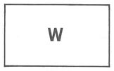 | 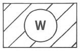 | 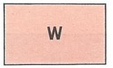 Rot mittel | |
| 1.1.1. | Kleinsiedlungsgebiete (§ 2 BauNVO) | Rot mittel | |||
| 1.1.2. | Reine Wohngebiete (§ 3 BauNVO) | 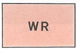 Rot mittel | |||
| 1.1.3. | Allgemeine Wohngebiete (§ 4 BauNVO) | 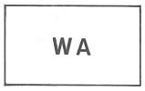 | 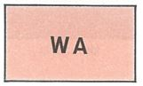 Rot mittel | ||
| 1.1.4. | Besondere Wohngebiete (§ 4a BauNVO) | 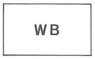 | 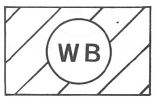 | 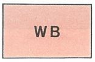 Rot mittel | |
| 1.2. | Gemischte Bauflächen (§ 1 Abs. 1 Nr. 2 BauNVO) | 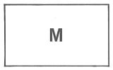 | 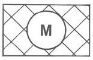 | Braun mittel | |
| 1.2.1. | Dorfgebiete (§ 5 BauNVO) | Braun mittel | |||
| 1.2.2. | Dörfliche Wohngebiete (§ 5a BauNVO) | Braun mittel | |||
| 1.2.3. | Mischgebiete (§ 6 BauNVO) | Braun mittel | |||
| 1.2.4. | Urbane Gebiete (§ 6a BauNVO) | Braun mittel | |||
| 1.2.5. | Kerngebiete (§ 7 BauNVO) | Braun mittel | |||
| 1.3. | Gewerbliche Bauflächen (§ 1 Abs. 1 Nr. 3 BauNVO) | 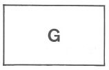 | 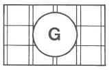 | 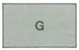 Grau mittel | |
| 1.3.1. | Gewerbegebiete (§ 8 BauNVO) | Grau mittel | |||
| 1.3.2. | Industriegebiete (§ 9 BauNVO) | 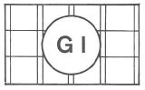 | 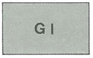 Grau mittel | ||
| 1.4. | Sonderbauflächen (§ 1 Abs. 1 Nr. 4 BauNVO) | 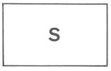 | 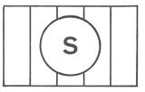 | 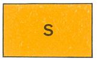 Orange mittel | |
| 1.4.1. | Sondergebiete, die der Erholung dienen (§ 10 BauNVO) z. B.: Wochenendhaus- gebiete | Orange mittel | |||
| 1.4.2. | Sonstige Sondergebiete (§ 11 BauNVO) z. B.: Klinikgebiete | Orange mittel | |||
| Zur weiteren Unterscheidung der Baugebiete sind Farbab- stufungen zulässig. | |||||
| Im Bebauungsplan können die farbigen Flächensignaturen auch als Randsignaturen verwendet werden. | |||||
| Im Flächennutzungsplan kann bei den Planzeichen für die Bauflächen der Nummern 1.1. bis 1.4. bei farbiger Darstellung der Buchstabe entfallen. | |||||
| 1.5. | Beschränkung der Zahl der Wohnungen (§ 9 Abs. 1 Nr. 6 BauGB) | Aus besonderen zulässige Zahl der Wohnungen in Wohngebäuden durch Ergänzungen der Planzeichen festgesetzt werden. | |||
| z.B. | 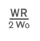 | ||||
| 2. | Maß der baulichen Nutzung (§ 5 Abs. 2 Nr. 1, § 9 Abs. 1 Nr. 1 BauGB, § 16 BauNVO) | ||||
| 2.1. | Geschoßflächenzahl | Dezimalzahl im Kreis, als Höchstmaß | z.B. | ||
| als Mindest- und Höchstmaß | z.B. | ||||
| oder GFZ mit Dezimalzahl, als Höchstmaß | z.B. | GFZ 0,7 | |||
| als Mindest- und Höchstmaß | z.B. | GFZ 0,5 bis 0,7 | |||
| 2.2. | Geschoßflache | GF mit Flächenangabe, als Höchstmaß | z.B. | GF 500 m2 | |
| als Mindest- und Höchstmaß | z.B. | GF 400 m2 bis 500 m2 | |||
| 2.3. | Baumassenzahl | Dezimalzahl im Rechteck | z.B. | ||
| oder BMZ mit Dezimalzahl, | z.B. | BMZ 3,0 | |||
| 2.4. | Baumasse | BM mit Volumenangabe | z.B. | BM 4000 m3 | |
| 2.5. | Grundflächenzahl | Dezimalzahl | z.B. | 0,4 | |
| oder GRZ mit Dezimalzahl, | z.B. | GRZ 0,4 | |||
| 2.6. | Grundfläche | GR mit Flächenangabe | z.B. | GR 100 m2 | |
| 2.7. | Zahl der Vollgeschosse | ||||
| als Höchstmaß | römische Ziffer, | z.B. | III | ||
| als Mindest- und Höchstmaß | römische Ziffer, | z.B. | III-V | ||
| zwingend | römische Ziffer in einem Kreis, | z.B. | |||
| 2.8. | Höhe baulicher Anlagen | in ................. m über einem Bezugspunkt | |||
| als Höchstmaß | |||||
| Traufhöhe TH | z.B. | TH 12,4 m über Gehweg | |||
| Firsthöhe FH | z.B. | FH 53,5 m über NN | |||
| Oberkante OK | z.B. | OK 124,5 m über NN | |||
| als Mindest- und Höchstmaß | z.B. | OK 116,0 m bis 124,5 m über NN | |||
| zwingend | z.B. | 124,5m über NN | |||
| 3. | Bauweise, Baulinien, Baugrenzen (§ 9 Abs. 1 Nr. 2 BauGB, §§ 22 und 23 BauNVO) | ||||
| 3.1. | Offene Bauweise | ||||
| 3.1.1. | nur Einzelhäuser zulässig | 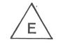 | |||
| 3.1.2. | nur Doppelhäuser zulässig | 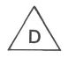 | |||
| 3.1.3. | nur Hausgruppen zulässig | 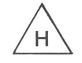 | |||
| 3.1.4. | nur Einzel- und Doppelhäuser zulässig | 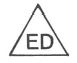 | |||
| 3.2. | Geschlossene Bauweise | ɡ | |||
| 3.3. | Abweichende Bauweise | Im Bebauungsplan ist die von 3.1. oder 3.2. abweichende Bauweise näher zu bestimmen. | |||
| schwarz/weiß | farbig | ||||
| 3.4. | Baulinie | Rot | |||
| 3.5. | Baugrenze |  Blau | |||
| Die Bestimmungslinien der Nummern 3.4. und 3.5. können bei farbiger Darstellung auch in durchgezogenen Linien ausgeführt werden. | |||||
| 4. | Einrichtungen und Anlagen zur Versorgung mit Gütern und Dienstleistungen des öffentlichen und privaten Bereichs, Flächen für den Gemeinbedarf, Flächen für Sport- und Spielanlagen (§ 5 Absatz 2 Nummer 2 Buchstabe a und Absatz 4, § 9 Absatz 1 Nummer 5 und Absatz 6 BauGB) | ||||
| schwarz/weiß | farbig | ||||
| 4.1. | Flächen für den Gemeinbedarf | 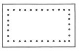 | 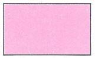 Karminrot mittel | ||
| Im Bebauungsplan kann die farbige Flächensignatur auch als Randsignatur verwendet werden. | |||||
| Einrichtungen und Anlagen: | |||||
| Öffentliche Verwaltungen | Sportlichen Zwecken dienende Gebäude und Einrichtungen | 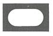 | |||
| Schule | Post | ||||
| Kirchen und kirchlichen Zwecken dienende Gebäude und Einrichtungen | Schutzbauwerk | 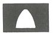 | |||
| Sozialen Zwecken dienende Gebäude und Einrichtungen | Feuerwehr | ||||
| Gesundheitlichen Zwecken dienende Gebäude und Einrichtungen | |||||
| Kulturellen Zwecken dienende Gebäude und Einrichtungen | |||||
| Die vorstehenden Zeichen können bei Bedarf durch Buchstaben ergänzt werden. | |||||
| Im Flächennutzungsplan können die vorstehenden Zeichen zur Kennzeichnung der Lage auch ohne Flächendarstellung verwendet werden. | |||||
| 4.2. | Flächen für Sport- und Spielanlagen | 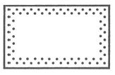 | |||
| Sportanlagen | Spielanlagen | 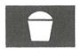 | |||
| Die vorstehenden Zeichen können bei Bedarf durch Buchstaben ergänzt werden. | |||||
| Im Flächennutzungsplan können die vorstehenden Zeichen zur Kennzeichnung der Lage auch ohne Flächendarstellung verwendet werden. | |||||
| 5. | Flächen für den überörtlichen Verkehr und für die örtlichen Hauptverkehrszüge (§ 5 Abs. 2 Nr. 3 und Abs. 4 BauGB) | ||||
| 5.1. | Straßenverkehr | ||||
| schwarz/weiß | farbig | ||||
| 5.1.1. | Autobahnen und autobahn- ähnliche Straßen | 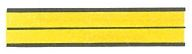 Goldocker | |||
| 5.1.2. | Sonstige überörtliche und örtliche Hauptverkehrsstraßen | Goldocker | |||
| 5.1.3. | Ruhender Verkehr | ||||
| 5.2. | Bahnen | ||||
| 5.2.1. | Bahnanlagen | 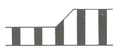 | Violett mittel | ||
| 5.2.2. | Straßenbahnen | Violett dunkel | |||
| 5.2.3. | Seilbahnen | Violett dunkel | |||
| 5.3. | Überörtliche Wege und örtliche Hauptwege | ||||
| z. B. Hauptwanderweg | |||||
| 5.4. | Umgrenzung der Flächen für den Luftverkehr | 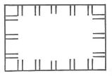 | 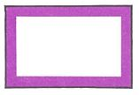 Violett dunkel | ||
| Zweckbestimmung: | |||||
| Flughafen | Landeplatz | ||||
| Segelfluggelände | Hubschrauber- landeplatz | ||||
| 6. | Verkehrsflächen (§ 9 Abs. 1 Nr. 11 und Abs. 6 BauGB) | ||||
| schwarz/weiß | farbig | ||||
| 6.1. | Straßenverkehrsflächen | 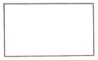 | 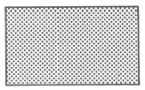 | 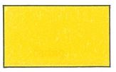 Goldocker | |
| 6.2. | Straßenbegrenzungslinie auch gegenüber Verkehrsflächen besonderer Zweckbestimmung | Permanentgrün hell | |||
| Die Straßenbegrenzungslinie entfällt, wenn sie mit einer Baulinie oder Baugrenze zusammenfällt. | |||||
| 6.3. | Verkehrsflächen beson- derer Zweckbestimmung | 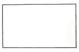 | 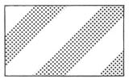 | 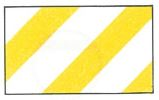 Goldocker | |
| Zweckbestimmung: | |||||
| Öffentliche Parkfläche | |||||
| Fußgängerbereich | |||||
| Verkehrsberuhigter Bereich | |||||
| 6.4. | Ein bzw. Ausfahrten und Anschluß anderer Flächen an die Verkehrsflächen (§ 9 Abs. 1 Nr. 4, 11 und Abs. 6 BauGB) | ||||
| z.B. Einfahrt | |||||
| z.B. Einfahrtbereich | |||||
| z.B. Bereich ohne Ein- und Ausfahrt | |||||
| 6.5. | Bahnen | Planzeichen vgl. Abschnitt 5.2. | |||
| 6.6. | Luftverkehr | Planzeichen vgl. Abschnitt 5.4. | |||
| 7. | Flächen für Versorgungsanlagen, für die Abfallentsorgung und Abwasserbeseitigung sowie für Ablagerungen; Anlagen, Einrichtungen und sonstige Maßnahmen, die dem Klimawandel entgegenwirken (§ 5 Absatz 2 Nummer 2 Buchstabe b, Nummer 4 und Absatz 4, § 9 Absatz 1 Nummer 12, 14 und Absatz 6 BauGB) | ||||
| schwarz/weiß | farbig | ||||
| 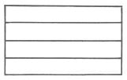 | 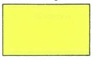 Gelb hell | ||||
| Im Bebauungsplan kann die farbige Flächensignatur auch als Randsignatur verwendet werden. | |||||
| Zweckbestimmung bzw. Anlagen und Einrichtungen: | |||||
| Elektrizität | Abwasser | 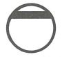 | |||
| Gas | 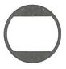 | Abfall | |||
| Fernwärme | Ablagerung | ||||
| Wasser | |||||
| Erneuerbare Energien | |||||
| Kraft-Wärme-Kopplung | |||||
| Die vorstehenden Zeichen können bei Bedarf durch Buchstaben ergänzt werden. | |||||
| Im Flächennutzungsplan können die vorstehenden Zeichen zur Kennzeichnung der Lage auch ohne Flächendarstellung verwendet werden. | |||||
| 8. | Hauptversorgungs- und Hauptabwasserleitungen (§ 5 Abs. 2 Nr. 4 und Abs. 4, § 9 Abs. 1 Nr. 13 und Abs. 6 BauGB) | ||||
| oberirdisch | 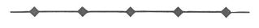 | ||||
| unterirdisch | 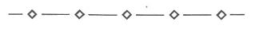 | ||||
| Die Art der Leitungen soll näher bezeichnet werden. | |||||
| 9. | Grünflächen (§ 5 Abs. 2 Nr. 5 und Abs. 4, § 9 Abs. 1 Nr. 15 und Abs. 6 BauGB) | ||||
| Schwarz/weiß | farbig | ||||
| 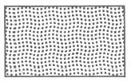 | 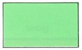 Grün mittel | ||||
| Im Bebauungsplan sind Grünflächen als öffentliche oder private Grünflächen besonders zu bezeichnen. | |||||
| Im Bebauungsplan kann die Flächensignatur auch als Randsignatur verwendet werden. | |||||
| Zweckbestimmung: | |||||
| Parkanlage | 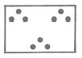 | Zeltplatz | 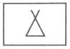 | ||
| Dauerkleingärten | Badeplatz, Freibad | ||||
| Sportplatz | Friedhof | ||||
| Spielplatz | |||||
| Im Flächennutzungsplan können die vorstehenden Zeichen zur Kennzeichnung der Lage auch ohne Flächendarstellung verwendet werden. | |||||
| 10. | Wasserflächen und Flächen für die Wasserwirtschaft, den Hochwasserschutz und die Regelung des Wasserabflusses (§ 5 Abs. 2 Nr. 7 und Abs. 4, § 9 Abs. 1 Nr. 16 und Abs. 6 BauGB) | ||||
| schwarz/weiß | farbig | ||||
| 10.1. | Wasserflächen | Blau mittel | |||
| Die Flächensignatur kann auch als Randsignatur verwendet werden. | |||||
| Zweckbestimmung z. B.: | |||||
| Hafen | Blau mittel | ||||
| 10.2. | Umgrenzung von Flächen für die Wasserwirtschaft, den Hoch- wasserschutz und die Regelung des Wasserabflusses | Blau dunkel | |||
| Zweckbestimmung z. B.: | |||||
| Hochwasser- rückhaltebecken | Blau dunkel | ||||
| Überschwemmungs- gebiet | |||||
Blau dunkel | |||||
| 10.3. | Umgrenzung der Flächen mit wasser- rechtlichen Festsetzungen | Blau dunkel | |||
| Zweckbestimmung z. B.: | |||||
| Schutzgebiet für Grund- und Quell- wassergewinnung | Blau dunkel | ||||
| Schutzgebiet für Oberflächen- gewässer | Blau dunkel | ||||
| 11. | Flächen für Aufschüttungen, Abgrabungen oder für die Gewinnung von Bodenschätzen (§ 5 Abs. 2 Nr. 8 und Abs. 4, § 9 Abs. 1 Nr. 17 und Abs. 6 BauGB) | ||||
| 11.1. | Flächen für Aufschüttungen | ||||
| 11.2. | Flächen für Abgrabungen oder für die Gewinnung von Bodenschätzen | ||||
| Bei kleinen Flächen kann die Randsignatur im Flächennutzungsplan entfallen. | |||||
| 12. | Flächen für die Landwirtschaft und Wald (§ 5 Abs. 2 Nr. 9 und Abs. 4, § 9 Abs. 1 Nr. 18 und Abs. 6 BauGB) | ||||
| schwarz/weiß | farbig | ||||
| 12.1. | Flächen für die Landwirtschaft | Gelbgrün | |||
| 12.2. | Flächen für Wald | Blaugrün | |||
| Die Flächensignaturen können auch als Randsignaturen verwendet werden. | |||||
| Zweckbestimmung z. B.: | |||||
| Erholungswald | |||||
| 13. | Planungen, Nutzungsregelungen, Maßnahmen und Flächen für Maßnahmen zum Schutz, zur Pflege und zur Entwicklung von Natur und Landschaft (§ 5 Abs. 2 Nr. 10 und Abs. 4, § 9 Abs. 1 Nr. 20, 25 und Abs. 6 BauGB) | ||||
| schwarz/weiß | farbig | ||||
| 13.1. | Umgrenzung von Flächen für Maßnah- men zum Schutz, zur Pflege und zur Entwicklung von Natur und Landschaft (§ 5 Abs. 2 Nr. 10 und Abs. 4, § 9 Abs. 1 Nr. 20 und Abs. 6 BauGB) | Grün dunkel | |||
| Maßnahmen zur Schutz, zur Pflege und zur Entwicklung von Natur und Landschaft, soweit solche Fest- setzungen nicht nach anderen Vorschriften getroffen werden können (§ 9 Abs. 1 Nr. 20 und Abs. 6 BauGB) | |||||
| Im Bebauungsplan sind die Maßnahmen näher zu bestimmen. | |||||
| 13.2. | Anpflanzungen von Bäumen, Sträuchern und sonstigen Bepflanzungen sowie Bindungen für Bepflanzungen und für die Erhaltung von Bäumen, Sträuchern und sonstigen Bepflanzungen sowie von Gewässern (§ 9 Abs. 1 Nr. 25 und Abs. 6 BauGB) | ||||
| Anpflanzen: | Bäume | ||||
| Sträucher | |||||
| Sonstige Bepflanzungen | Grün dunkel | ||||
| Erhaltung: | Bäume | ||||
| Sträucher | |||||
| Sonstige Bepflanzungen | Grün dunkel | ||||
| Festsetzungen für Teile baulicher Anlagen sind im Bebauungsplan näher zu bestimmen. | |||||
| 13.2.1. | Umgrenzung von Flächen zum Anpflanzen von Bäumen, Sträuchern und sonstigen Bepflanzungen (§ 9 Abs. 1 Nr. 25 Buchstabe a) und Abs. 6 BauGB) | ||||
| Anpflanzen: | Bäume | ||||
| Sträucher | |||||
| Sonstige Bepflanzungen | Grün dunkel | ||||
| 13.2.2. | Umgrenzung von Flächen mit Bindungen für Bepflanzungen und für die Erhaltung von Bäumen, Sträuchern und sonstigen Bepflanzungen sowie von Gewässern (§ 9 Abs. 1 Nr. 25 Buchstabe b) und Abs. 6 BauGB) | ||||
| Erhaltung: | Bäume | ||||
| Sträucher | |||||
| Sonstige Bepflanzungen | |||||
| schwarz/weiß | farbig | ||||
| 13.3. | Umgrenzung von Schutzgebieten und Schutzobjekten im Sinne des Natur- schutzrechts (§ 5 Abs.4, § 9 Abs. 6 BauGB) | Grün dunkel | |||
| Bei Bedarf sind zur weiteren Unterscheidung der Schutzgebiete und Schutzobjekte Differenzierungen in der Umgrenzungssignatur zulässig. | |||||
| Schutzgebiete und Schutzobjekte: | |||||
| Naturschutzgebiet | Naturpark | ||||
| Nationalpark | Naturdenkmal | ||||
| Landschaftsschutz- gebiet | Geschützter Landschafts- bestandteil | ||||
| 14. | Regelungen für die Stadterhaltung und für den Denkmalschutz (§ 5 Abs. 4, § 9 Abs. 6, § 172 Abs. 1 BauGB) | ||||
| schwarz/weiß | farbig | ||||
| 14.1. | Umgrenzung von Erhaltungsbe- reichen, wenn im Bebauungs- plan bezeichnet (§ 172 Abs. 1 BauGB) | Rot | |||
| 14.2. | Umgrenzung von Gesamtanlagen (Ensembles), die dem Denk- malschutz unterliegen (§ 5 Abs. 4, § 9 Abs. 6 BauGB) | Rot | |||
| 14.3. | Einzelanlagen (unbewegliche Kulturdenkmale), die dem Denkmalschutz unterliegen (§ 5 Abs. 4, § 9 Abs. 6 BauGB) | ||||
| 15. | Sonstige Planzeichen | ||||
| schwarz/weiß | farbig | ||||
| 15.1. | Umgrenzung der Bauflächen, für die eine zentrale Abwasserbe- seitigung nicht vorgesehen ist (§ 5 Abs. 2 Nr. 1 und Abs. 4 BauGB) | Gelb hell | |||
| 15.2. | Mindestmaße für die Größe, Breite und Tiefe von Baugrundstücken und Höchstmaße für Wohnbaugrundstücke (§ 9 Abs. 1 Nr. 3 BauGB) | ||||
| Mindest-/Höchstgröße | F mind./höchst. | z.B. | F mind./höchst. 1000 m2 | ||
| Mindest-/Höchstbreite | b mind./höchst. | z.B. | b mind./höchst. 20 m | ||
| Mindest-/Höchsttiefe | t mind./höchst. | z.B. | t mind./höchst. 60 m | ||
| 15.3. | Umgrenzung von Flächen für Nebenanlagen, Stellplätze, Garagen und Gemeinschafts- anlagen (§ 9 Abs. 1 Nr. 4 und 22 BauGB) | Rot | |||
| Zweckbestimmung: | |||||
| Stellplätze | St | Gemeinschafts- stellplätze | GSt | ||
| Garagen | Ga | Gemeinschafts- garagen | GGa | ||
| Spielplatz | |||||
| 15.4. | Besonderer Nutzungszweck von Flächen, der durch besondere städtebauliche Gründe erfor- derlich wird (§ 9 Abs. 1 Nr. 9 BauGB) | z.B. | |||
| 15.5. | Mit Geh-, Fahr- und Leitungs- rechten zu belastende Flächen (§ 9 Abs. 1 Nr. 21 und Abs. 6 BauGB) | ||||
| bei schmalen Flächen | |||||
| 15.6. | Umgrenzung der Flächen für Nutzungs- beschränkungen oder für Vorkehrungen zum Schutz gegen schädliche Umwelt- einwirkungen im Sinne des Bundes- Immissionsschutzgesetzes (§ 5 Abs. 2 Nr. 6 und Abs. 4 BauGB) | ||||
| Umgrenzungen der Flächen für besondere Anlagen und Vorkehrungen zum Schutz vor schädlichen Umwelteinwirkungen im Sinne des Bundes-Immissionsschutzgesetzes (§ 9 Abs. 1 Nr. 24 und Abs. 6 BauGB) | |||||
| Im Bebauungsplan sind die Maßnahmen innerhalb der Flächen näher zu bestimmen. | |||||
| 15.7. | Umgrenzung der Gebiete, in denen bestimmte, die Luft erheblich ver- unreinigende Stoffe nicht oder nur beschränkt verwendet werden dürfen (§ 9 Abs. 1 Nr. 23 und Abs. 6 BauGB) | ||||
| Im Bebauungsplan sind die Maßnahmen innerhalb der Gebiete näher zu bestimmen. | |||||
| 15.8. | Umgrenzung der Flächen, die von der Bebauung freizuhalten sind (§ 9 Abs. 1 Nr. 10 und Abs. 6 BauGB) | ||||
| Umgrenzung der von der Bebauung freizuhaltenden Schutzflächen (§ 9 Abs. 1 Nr. 24 und Abs. 6 BauGB) | |||||
| Im Bebauungsplan sind die Maßnahmen innerhalb der Flächen näher zu bestimmen. | |||||
| 15.9. | Flächen für Aufschüttungen, Abgra- bungen und Stützmauern, soweit sie zur Herstellung des Straßenkörpers erforderlich sind (§ 9 Abs. 1 Nr. 26 und Abs. 6 BauGB) | ||||
| Aufschüttung | |||||
| Abgrabung | |||||
| Stützmauer | |||||
| 15.10. | Höhenlage bei Festsetzungen (§ 9 Abs. 2 und 6 BauGB) | z.B. | Ok (Oberkante) Gehweg 124,5 m ü. NN | ||
| z.B. | Uk (Unterkante) Brücke 116,0 m ü. NN | ||||
| schwarz/weiß | farbig | ||||
| 15.11. | Umgrenzung der Flächen, bei deren Bebauung besondere bauliche Vor- kehrungen gegen äußere Einwirkungen oder bei denen besondere bauliche Sicherungsmaßnahmen gegen Naturgewalten erforderlich sind (§ 5 Abs. 3 Nr. 1 und Abs. 4, § 9 Abs. 5 Nr. 1 und Abs. 6 BauGB) | Grau dunkel | |||
| Umgrenzung der Flächen, unter denen der Bergbau umgeht oder die für den Abbau von Mineralien bestimmt sind (§ 5 Abs 3 Nr. 2 und Abs. 4, § 9 Abs. 5 Nr. 2 und Abs. 6 BauGB) | |||||
| schwarz/weiß | |||||
| 15.12. | Umgrenzung der für bauliche Nutzungen vorgesehenen Flächen, deren Böden erheblich mit umweltgefährdenden Stoffen belastet sind (§ 5 Abs. 3 Nr. 3 und Abs. 4 BauGB) | ||||
| Umgrenzung der Flächen, deren Böden erheblich mit umweltgefährdenden Stoffen belastet sind (§ 9 Abs. 5 Nr. 3 und Abs. 6 BauGB) | |||||
| Im Flächennutzungsplan kann nachstehendes Zeichen zur Kennzeichnung der Lage ohne Flächendarstellung verwendet werden. | |||||
| 15.13. | Grenze des räumlichen Geltungs- bereichs des Bebauungsplans (§ 9 Abs. 7 BauGB) | Grau dunkel | |||
| 15.14. | Abgrenzung unterschiedlicher Nutzung, z. B. von Baugebieten, oder Abgrenzung des Maßes der Nutzung innerhalb eines Baugebiets (z. B. § 1 Abs. 4 § 16 Abs. 5 BauNVO) | ||||